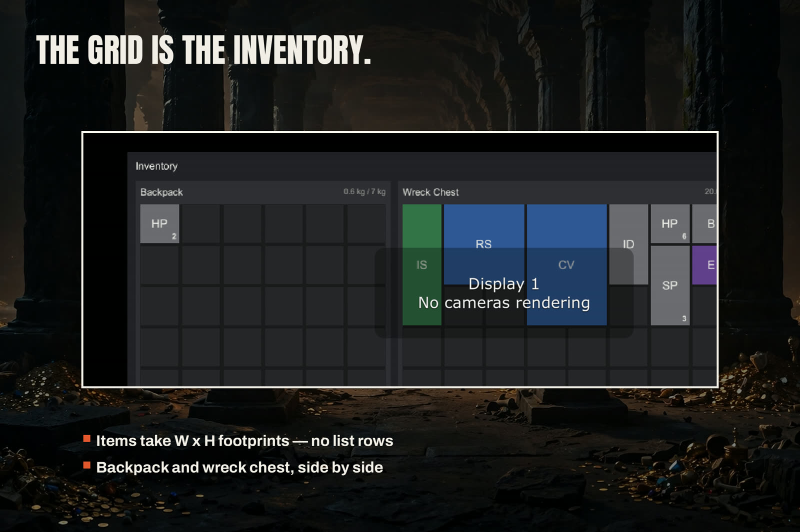

Building Your Screen
One call builds the whole inventory UI:
InventoryScreenView.Build(parent, primary, secondary, equipment, theme)
- parent — typically your canvas transform.
- primary — the player's container (its panel is always built).
- secondary — the container being looted, or null.
- equipment — an
EquipmentSet, or null (no doll). - theme — an
InventoryThemeasset, or null for shipped defaults.
What appears: a dim backdrop; the window; one panel per container —
title, live weight readout ("12.5 kg / 60 kg"), the grid, Sort and
Stack buttons, and a controls hint; the doll when equipment is
passed; a Rotate (R) button and a Close button on the window;
a status line every refusal and result reports on; and a drag layer
above everything. screen.Close() hides it; SetActive(true) shows
it again. screen.SetStatus(...) is yours to use for your own
messages in the same voice.
The theme
InventoryTheme carries the metrics and colours: cell size and
spacing, panel/window/backdrop colours, text colours, button colour,
and a colour per rarity (Common, Uncommon, Rare, Epic — and the rest
of the ItemRarity range). Restyle by editing one asset; labels use
uGUI Text with the theme's font slot, so a game that wants its own
font sets it there. Rarity is shown as colour, and stack counts stay
legible down to a 1×1 item — the count badge is drawn inside the
item's own rect.
Panels on their own
ContainerPanelView.Build(...) and EquipmentDollView.Build(...)
are public too — if your game has its own window chrome, build the
panels into your layout and skip the factory window.